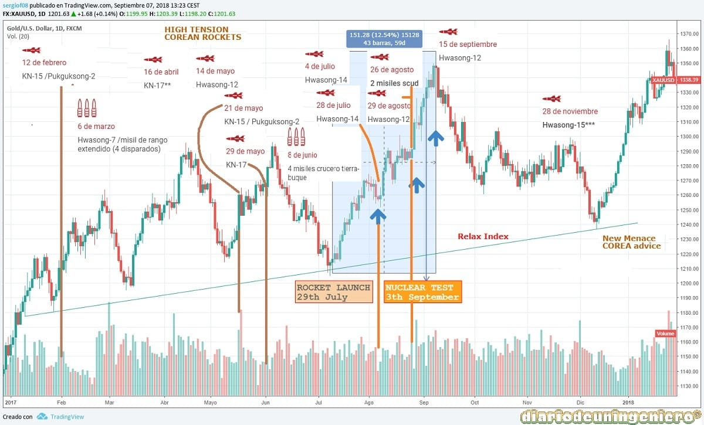

Kim Yong Un, hijo del fallecido Kim Yong Il, es sin duda el lider Norcoreano que ha desarrollado con más fuerza el programa nuclear y ha puesto el foco internacional en su régimen. En el gráfico siguiente se pude observar los ancestros de Kim y el numero de lanzamientos durante las últimas cuatro decadas.
 Con solo dos pruebas nucleares en el régimen anterior, la diferencia ha sido notoria
Con solo dos pruebas nucleares en el régimen anterior, la diferencia ha sido notoria
 Al inicio de 2017 la escalada de pruebas nucleares empezo a provocar preocupacion en la comunidad internacional. El lider norcoreano ha aumentado el presupuesto de su país en el gasto de defensa con respecto a su antecesor, habiendo puesto el foco en conseguir dotar a su país de potencia nuclear. Y es que el numero de lanzamientos se ha duplicado en estos dos últimos años y las pruebas han empezado a alcanzar parametros alarmantes como se puede observar en la siguiente figura:
Al inicio de 2017 la escalada de pruebas nucleares empezo a provocar preocupacion en la comunidad internacional. El lider norcoreano ha aumentado el presupuesto de su país en el gasto de defensa con respecto a su antecesor, habiendo puesto el foco en conseguir dotar a su país de potencia nuclear. Y es que el numero de lanzamientos se ha duplicado en estos dos últimos años y las pruebas han empezado a alcanzar parametros alarmantes como se puede observar en la siguiente figura:
 El año 2017 sera recordad sin duda por conseguir dos hitos importantes como son la capacidad nuclear de sus bombas, habiendo aumentado su capacidad destructiva en más del doble con respecto al año anterior y el alcance de sus misiles teniendo una potencia suficiente para alcanzar Alaska y la costa oeste. Estas pruebas que se han realizado sin aviso a sus vecinos habiendo violado varios acuerdos internacionales han puesto en jaque a países como China por su historico apoyo al régimen norcoreano. Japón ha visto por segunda vez en la historia el miedo a una guerra nuclear cuando en Julio sobrevolo sobre el país un cohete norcoreano al parecer sin ninguna carga encima. Estos lanzamientos han alarmado mucho a sus vecinos Corea del Sur, el eterno enemigo y a Japón.
El año 2017 sera recordad sin duda por conseguir dos hitos importantes como son la capacidad nuclear de sus bombas, habiendo aumentado su capacidad destructiva en más del doble con respecto al año anterior y el alcance de sus misiles teniendo una potencia suficiente para alcanzar Alaska y la costa oeste. Estas pruebas que se han realizado sin aviso a sus vecinos habiendo violado varios acuerdos internacionales han puesto en jaque a países como China por su historico apoyo al régimen norcoreano. Japón ha visto por segunda vez en la historia el miedo a una guerra nuclear cuando en Julio sobrevolo sobre el país un cohete norcoreano al parecer sin ninguna carga encima. Estos lanzamientos han alarmado mucho a sus vecinos Corea del Sur, el eterno enemigo y a Japón.
 El régimen afirma que estas supuestas pruebas responden a las continuas operaciones de los Estados Unidos en Corea. A la derecha se puede ver una imagen de las supuestas operaciones en las que participo buena parte de su flota, ya que tiene desplegados 3 portaviones en la zona y cerca de 5000 hombres. Y por ello en Noviembre, el lider norcoreano amenazaría a Estados Unidos con un supuesto ataque a Guam, la isla de los Estados Unidos más cercana a la península de Corea. Trump respondio con una amenaza de un fuego sobre su país jamás visto en la historia.
El régimen afirma que estas supuestas pruebas responden a las continuas operaciones de los Estados Unidos en Corea. A la derecha se puede ver una imagen de las supuestas operaciones en las que participo buena parte de su flota, ya que tiene desplegados 3 portaviones en la zona y cerca de 5000 hombres. Y por ello en Noviembre, el lider norcoreano amenazaría a Estados Unidos con un supuesto ataque a Guam, la isla de los Estados Unidos más cercana a la península de Corea. Trump respondio con una amenaza de un fuego sobre su país jamás visto en la historia.
El 3 de Septiembre Corea realizaría una prueba nuclear, en la que además afirmo que habia conseguido miniaturizar la bomba. La bomba de Corea con tecnología de hidrógenos tendría una potencia de destrucción de 70 kilotones, 4 veces por encima de las que USA lanzó contra Japón en la segunda guerra mundial. Además podría ser acoplada a un misil balístico como el lanzado el 29 de Julio. Corea del Norte afirmaba también poder producir ojivas de este modelo en cadena.
Con todo esto la reacción de los mercados no se hizo nada esperar, produciendose bajadas generalizadas en los índices y resurgiendo una apreciación de los metales preciosos ante cualquier intervención de los Estados Unidos. Sin embargo poco después de este ensayo y ante la marcha del tiempo, este repunte del oro fue suavizandose hasta unos niveles algo normales para este año, los 1250 que volverían a escalar de nuevo ante la amenaza verbal del lider Norcoreano.
En el siguiente gráfico se puede ver como estos hechos desencadenaron un miedo en la economía mundial que no se había visto desde el Brexit. Siendo bastante paradójico que cuando la economía mundial esta en unos mejores niveles con Estados Unidos ya subiendo los tipos de interes constantemente el oro sufriera estas subidas. A partir de noviembre empezaría otra ola de amenazas con algun lanzamiento de misiles que hizo otra vez recuperar las subidas del termómetro del oro.
En el siguiente gráfico se muestra el comportamiento del oro ante los diferentes eventos relacionados con la actitud de Corea del Norte. Se contabiliza casi un 15% de subida del oro sólo por estos eventos, lo que es algo muy grande ya que en las compañías mineras la cifra de subida alcanzaria casi un 50% de revalorización.
Los tipos de misiles y su alcance son los siguientes:

En el segundo grafico se muestra la relación de uno de los más importantes ETFs correlado con el precio del oro.
© 2016 - All Rights Reserved - Diseñada por Sergio López Martínez
![[Valid RSS]](https://www.feedvalidator.org/images/valid-rss-rogers.png "Validate my RSS feed")